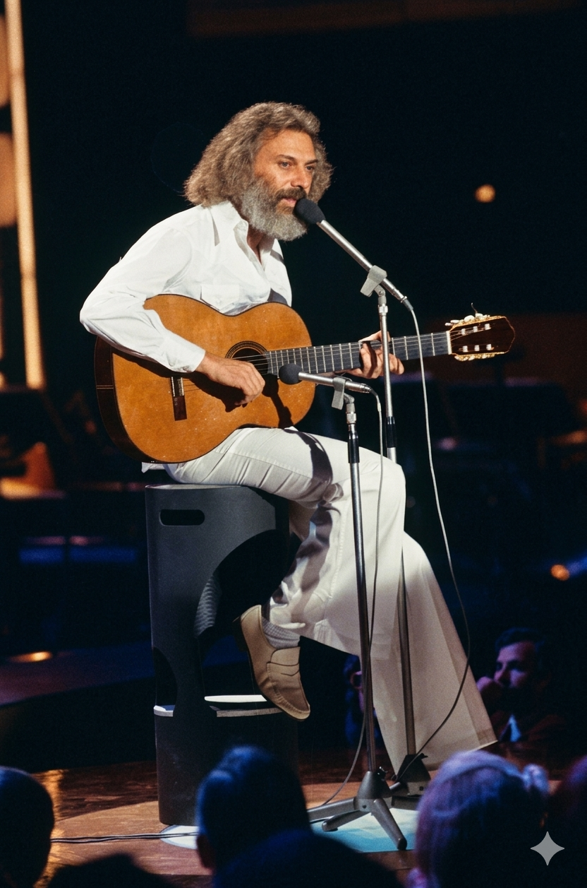

ז'ורז' מוסטקי
Georges Moustaki
אטימולוגיה ומקור השם המלא
שם מקורי: ג'וזפה מוסטאקי (Giuseppe Mustacchi)
נולד למשפחה יהודית-יוונית דוברת איטלקית במצרים.
Giuseppe: הגרסה האיטלקית לשם העברי יוסף, שפירושו "יוסיף ה' לי בן אחר", מסמל ברכה והמשכיות.
Mustacchi: שם משפחה ממוצא יווני-קורפיאוטי. האטימולוגיה קשורה ככל הנראה למילה האיטלקית/יוונית לשפם (Mustache), אולי כינוי לאב קדמון בעל שפם בולט.
שם הבמה (המחווה): ז'ורז' (Georges)
עם הגעתו לפריז ב-1951, מוסטאקי הצעיר הושפע עמוקות משיריו של ז'ורז' ברסנס. לאחר שפגש את ברסנס והפך לחברו הקרוב, הוא החליט לשנות את שמו הפרטי מג'וזפה לז'ורז' כאות של הוקרה והערצה למורה הדרך האמנותי שלו.
ילדות באלכסנדריה - פסיפס של תרבויות
הבית הקוסמופוליטי: מוסטקי נולד באלכסנדריה, מצרים, בתקופה שבה העיר הייתה צומת דרכים תרבותי נדיר. בבית דיברו איטלקית, ברחוב דיברו ערבית, ובבית הספר למד בצרפתית. הוריו, נסים ושרה, היו סוחרי ספרים שהפעילו את חנות "Cité du Livre", מה שהעניק לו גישה לספרות ושירה עולמית מגיל צעיר מאוד.
הזהות המורכבת: הוא גדל כיהודי יווני בטריטוריה מצרית תחת השפעה בריטית וצרפתית. המורכבות הזו יצרה אצלו זהות של "אזרח העולם" (Cosmopolite) ומנעה ממנו להרגיש שייך למקום אחד בלבד. זיכרונותיו מהים התיכון, מהריחות של השוק באלכסנדריה ומהשמש המצרית ליוו את כל יצירתו המאוחרת.
הבריחה מהגורל הבורגני: למרות שהיה אמור להמשיך את עסקי הספרים של אביו, מוסטקי נמשך לגיטרה ולחיי החופש. בשנת 1951, כשהוא רק בן 17, עזב את מצרים לפריז. בתחילה עבד כעיתונאי וכמוכר ספרים מדלת לדלת, אך מהר מאוד נשאב לעולם הקברטים של הגדה השמאלית.
אידאולוגיה והישגים
ה"מטק" (Le Métèque): האידאולוגיה האמנותית של מוסטקי התמקדה ביופי שבלהיות "זר". שירו המפורסם ביותר, "Le Métèque" (כינוי גנאי למהגרים), הפך תחת ידו להמנון גאווה של אנשי השוליים והנוודים התרבותיים. הוא הציג את דמותו של הזר עם הזקן הפרוע והמראה הים-תיכוני כדמות רומנטית ומושכת.
הכותב של הגדולים: לפני שהפך לזמר מבצע מצליח, מוסטקי היה כותב שירים (Songwriter) מהמבוקשים בצרפת. הישגו הגדול ביותר היה כתיבת המילים לשיר "Milord" עבור אדית פיאף (שאיתה גם ניהל רומן קצר וסוער). הוא כתב גם עבור איב מונטאן, דלידה, וברברה.
החופש והבדידות: שיריו עסקו תמיד בערכי החופש האישי והבדידות המזהרת. הוא שילב מוזיקה ברזילאית (בוסה נובה), מקצבים יווניים ושאנסון צרפתי, ויצר סגנון רך, לחיש ואינטלקטואלי שהיה ייחודי לו.
השירים הגדולים
• מקורות מחקר:
- Questions à la une (2000) - ספר זיכרונותיו של מוסטקי המפרט את ילדותו באלכסנדריה.
- ארכיוני ה-INA הצרפתי - ראיונות על עבודתו המשותפת עם אדית פיאף וז'ורז' ברסנס.
- Georges Moustaki, la ballade du Métèque - ביוגרפיה מאת לואי-ז'אן קלווה (Louis-Jean Calvet).